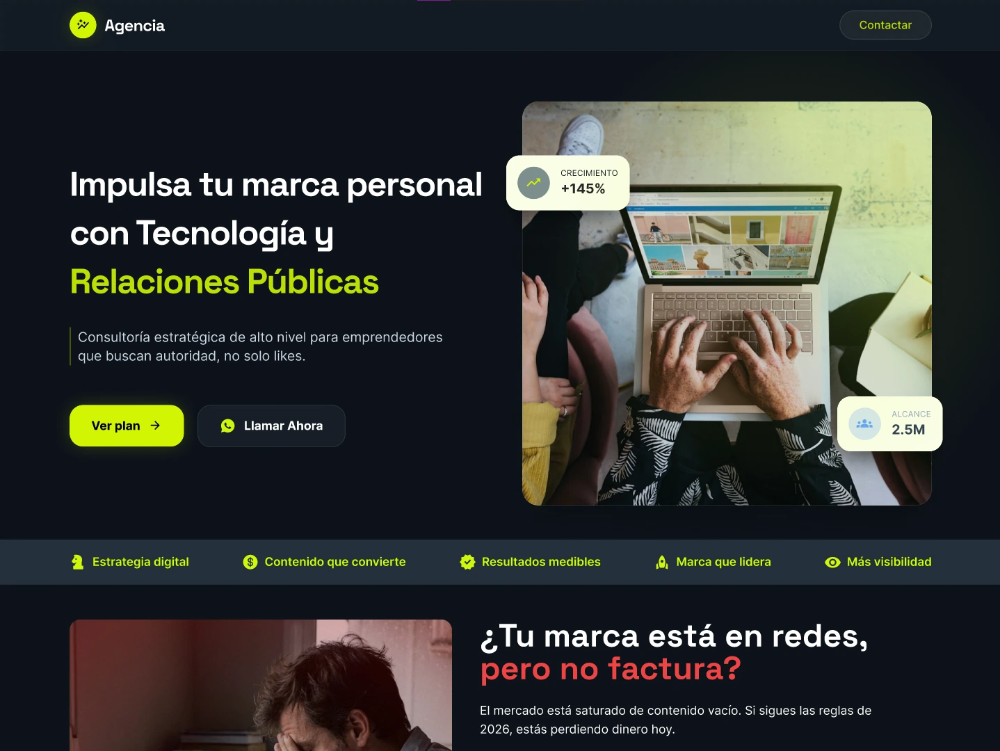
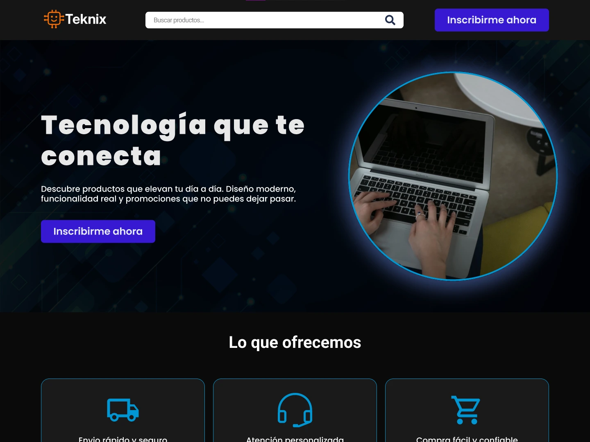

Mis Proyectos
Algunos proyectos frontend, backend y aplicaciones modernas que desarrollé.

Effetha
Effetha es una página web desarrollada en WordPress enfocada en ofrecer servicios y contenido de manera moderna y organizada. Cuenta con un diseño responsive, fácil navegación y una estructura optimizada para brindar una mejor experiencia a los usuarios en distintos dispositivos.

Teknix
Teknix es una página de ventas desarrollada en WordPress que permite gestionar productos, compras y pedidos de forma rápida y sencilla. Cuenta con un diseño moderno, adaptable a dispositivos móviles y enfocado en brindar una experiencia de compra segura y eficiente.

C.S.G. Contrastistas Generales
CSG Contratistas Generales es una página web desarrollada para presentar servicios de construcción, mantenimiento y gestión de proyectos. El sitio cuenta con un diseño profesional y responsive, permitiendo mostrar información de la empresa, proyectos realizados y medios de contacto de forma clara y accesible para los clientes.